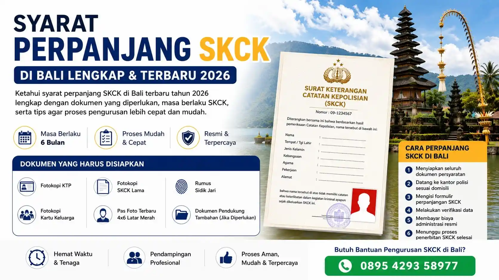

Apa Itu Perpanjang SKCK?
SKCK atau Surat Keterangan Catatan Kepolisian merupakan dokumen resmi yang diterbitkan oleh Kepolisian Republik Indonesia sebagai bukti bahwa seseorang tidak memiliki catatan kriminal tertentu. Dokumen ini biasanya digunakan untuk kebutuhan melamar pekerjaan, pendaftaran CPNS, pengajuan visa, administrasi pendidikan, hingga berbagai keperluan resmi lainnya.
SKCK memiliki masa berlaku selama 6 bulan sejak tanggal diterbitkan. Setelah masa berlaku habis, pemilik SKCK perlu melakukan perpanjangan agar dokumen tetap dapat digunakan sesuai kebutuhan administrasi.
Rizch Service hadir sebagai biro jasa SKCK Bali yang juga melayani pengurusan SIM di Bali dan berbagai layanan administrasi lainnya. Dengan pendampingan yang tepat, proses pengurusan dokumen dapat menjadi lebih praktis dan efisien.
Syarat Perpanjang SKCK di Bali
Sebelum melakukan perpanjangan SKCK, terdapat beberapa dokumen penting yang perlu dipersiapkan agar proses pengurusan berjalan lebih lancar.
Dokumen yang Harus Disiapkan
Berikut beberapa syarat perpanjang SKCK di Bali yang umumnya diperlukan:
- Fotokopi KTP
- Fotokopi Kartu Keluarga
- Fotokopi SKCK lama
- Pas foto terbaru ukuran 4x6 latar merah
- Rumus sidik jari apabila diminta
- Dokumen pendukung tambahan sesuai kebutuhan tertentu
Masa Berlaku SKCK
SKCK berlaku selama 6 bulan sejak diterbitkan. Jika masa berlaku habis terlalu lama, biasanya pemohon akan diarahkan untuk membuat SKCK baru kembali sesuai ketentuan kepolisian.
Cara Perpanjang SKCK di Bali
Berikut langkah umum proses perpanjang SKCK Bali:
- Menyiapkan seluruh dokumen persyaratan
- Datang ke kantor polisi sesuai domisili
- Mengisi formulir perpanjangan SKCK
- Melakukan verifikasi data
- Membayar biaya administrasi resmi
- Menunggu proses penerbitan SKCK selesai
Pastikan data pada SKCK lama masih sesuai dengan identitas terbaru Anda. Jika terdapat perubahan data tertentu, biasanya diperlukan penyesuaian dokumen tambahan saat proses perpanjangan.
Perpanjang SKCK Lebih Mudah di Bali
Bagi masyarakat yang memiliki kesibukan kerja atau keterbatasan waktu, penggunaan jasa pendampingan administrasi dapat membantu proses pengurusan menjadi lebih praktis tanpa harus bingung dengan prosedur yang berlaku.
Selain layanan SKCK, Rizch Service juga membantu berbagai kebutuhan administrasi dokumen resmi lainnya di Bali dengan proses yang lebih mudah dan informatif.
FAQ Syarat Perpanjang SKCK di Bali
SKCK masih dapat diperpanjang apabila belum melewati batas tertentu. Namun jika sudah terlalu lama habis masa berlakunya, biasanya perlu membuat SKCK baru.
Lama proses tergantung kondisi antrean dan kelengkapan dokumen, namun umumnya dapat selesai dalam hari yang sama apabila persyaratan lengkap.
Pada umumnya pengurusan SKCK dilakukan sesuai domisili atau mengikuti ketentuan kepolisian setempat.
Butuh Bantuan Perpanjang SKCK di Bali?
Rizch Service siap membantu pendampingan administrasi pengurusan SKCK di Bali agar proses lebih mudah, praktis, dan efisien.
Konsultasi via WhatsApp